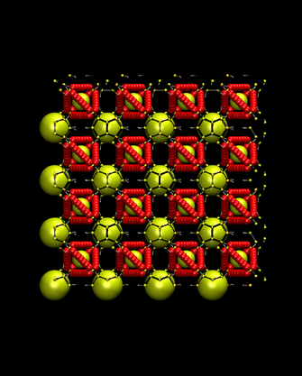

Introduction: Nanoparticle (NP) assemblies have numerous demonstrated and predicted applications, such as optical or electronic materials, biosensing, drug delivery and others. For many of these applications, an ordered structure of NPs, rather than an amorphous structure, is preferred or even necessary. One way to create ordered nanostructures is by taking advantage of the specific recognition and sequence control offered by DNA. Lattices with cubic diamond (CD) symmetry with nm scale spacing are predicted to have interesting optical properties, such as a complete optical band gap in 3D. Very recently, we create DNA-functionalized NPs with directional interactions that assemble into CD symmetry, opening the possibility to realize these novel materials.
Research: My current research is about studying the stability of CD lattice as a function of NP size. Using molecular dynamics simulation and dynamical theory of crystal lattices, I estimate the free energy of the lattice for different NP sizes. The optical properties of lattices can be tuned by changing NP size. So having better knowledge about stability of CD lattices as a function of particle size is important. Furthermore I’m trying to study the crystallite shape of CD lattices by calculation the surface energy and Wulff construction method. Vibrations of NPs in the lattice can affect the optical properties (optical band gap and plasmonic effects). I also try to study the effects of lattice vibration on optical properties of this CD lattice.
Introduction: Most liquids go through a phase transition to a crystal when they are cooled down “slowly” (in experiment time scale). Some liquids don’t follow this trend and remains in amorphous structure in the solid state. The slowing down of dynamics of amorphous liquid and transition to amorphous solid during cooling down the liquid is called glass transition. To have a better understanding of glass formation we study the dynamic heterogeneity of glass forming materials near the glass transition temperature.
Research: Star polymers are one of the most important examples of branched polymers and one of the simplest deviation from linear polymers that has numerous applications such as gene/drug delivery and supramolecular assemblies. In my research I study the dynamics heterogeneity of star polymers near the glass transition temperature for different number of arms and different arm length by calculating the non Gaussian factor and study the string-like motion of highly mobile particles.
Introduction: Many of pure polymeric materials have poor mechanical strength, thermal conductivity, electrical conductivity, or optical properties (eg. optical resistivity). To create polymeric materials with desirable properties, composite materials are needed. The polymeric material composites have successfully improved some of the properties of pure polymers (eg. electerical and optical). Many of these improvements in polymer composites properties are either related to unique properties of NPs themselves, or it arises based on polymer-NP interfacial interactions. The modification of interfacial polymer behavior is one of the primary sources of property modifications of polymer-nanoparticle composites. Thus, using a composite component that maximizes the interfacial area is desirable. NPs due to their large surface-to-volume ratio and their unique optical, electrical and mechanical properties, are one of the best candidates to synthesize polymeric material composites.
Research: We study the dynamics and glass formation of the polymer-NP composites. We specially, focus on the effect of NP size on the interfacial polymers dynamics and structure. :Using molecular simulations, we explore the degree to which interfacial polymer structure and dynamics, and thus the material properties, depend on the scale of the NP size.
Introduction: Graphene, is a two-dimensional lattice of single-layered graphite, has attracted increasing attentions, due to its unique properties which promise fabrication of exciting nanotechnology-based devices in a broad range of potential applications in electronics, life sciences and many others. In recent years, graphene-based materials offer promising progress in biological and medical areas such as disease diagnosis, biosensing, cancer targeting, photothermal therapy and drug delivery. Graphene nanoribbon (GNR) is a 2d graphene sheet with high aspect ratio (the length is much longer than the width) are considered as a quasi 1d objects the limited space for electrons and phonons in the width of graphene nanoribbon results in an interesting properties like opening an electrical band gap as opposed to graphene with zero electrical band gap and change in phonon dispersion relation leading to changing in the light absorption of these material relative to graphene. GNRs have near-infrared absorption and they can be used in cancer photothermal therapy. On the other hand GNRs have sharp edges and can destructive effect on cell membrane so it is important to study their toxicity. So it is important to study both useful and harmful aspects of GNR.
Research: In my research I synthesized graphene oxide nanoribbon (GONR) by using chemical method to open up the carbon nanotube. And characterize them by analyzing Raman spectroscopy, XPS, AFM and optical absorption. I also used green tea to reduce GONRs to obtain GNRs using green tea and analyzed the optical absorption of theses structures. These GNRs and GONRs was used to study the effectiveness of GNR in cancer photothermal therapy studies and their toxicity effects on living cells.